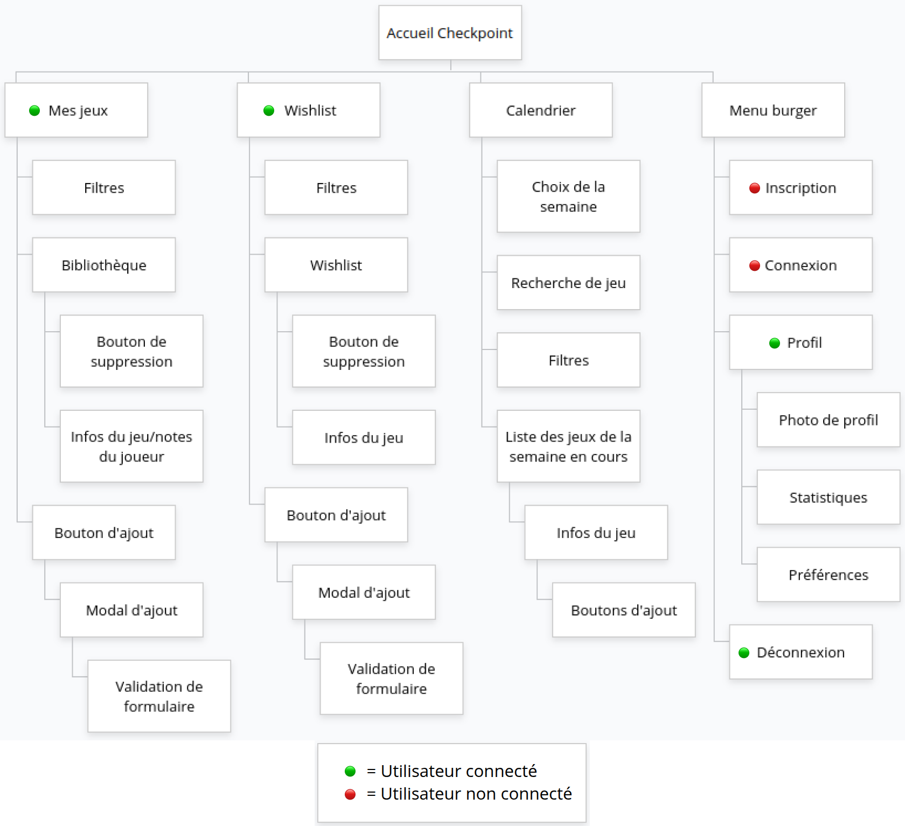

Expression des besoins – Projet Checkpoint
1. Contexte et origine du projet
Depuis de nombreuses années, je suis passionné par les jeux vidéo. Cette passion m'a amené à vouloir mieux organiser et suivre mon expérience de joueur : ajouter des notes, suivre ma progression, gérer les jeux que je compte acheter ou commencer, et garder une trace de mon parcours vidéoludique.
Avant même de m'orienter vers le développement web, j'avais déjà en tête l'idée d'un outil personnel, centralisé et sur mesure, pour répondre à ce besoin. Une fois engagé dans ma formation de Développeur Web et Web Mobile, j'ai vu l'opportunité parfaite de concrétiser cette idée à travers un projet complet et structuré, à la fois utile et motivant pour moi.
Ce projet, que j'ai nommé Checkpoint, est donc né de mon propre besoin et de ma volonté de développer un outil pratique dans un univers qui me passionne.
2. Objectifs du projet
- Gérer sa collection de jeux vidéo (ajout, suivi, suppression)
- Suivre sa progression et son temps de jeu sur chaque titre
- Rédiger des notes et avis personnels sur ses jeux
- Organiser une wishlist des jeux à venir ou à acheter
- Visualiser un calendrier des prochaines sorties de jeux vidéo
3. Utilisateurs visés
- Joueurs passionnés ou amateurs souhaitant garder une trace personnalisée de leur parcours de jeu
- Personnes aimant organiser leurs sessions de jeu et planifier leurs futurs achats
- Utilisateurs recherchant un outil personnel, sécurisé et centralisé
4. Fonctionnalités attendues
- Gestion de collection : ajout, modification, suppression de jeux possédés, suivi du statut (non commencé, en cours, terminé, abandonné…), temps de jeu, notes personnelles
- Wishlist : gestion d'une liste de jeux souhaités, possibilité de les ajouter à la collection
- Calendrier des sorties : affichage des sorties à venir (données issues de l'API RAWG), filtrage du contenu adulte
- Recherche & filtres : tri par genre, plateforme, statut, durée de jeu…
- Profil utilisateur : gestion du profil, photo, top 5 jeux favoris, statistiques personnelles
- Authentification : inscription, connexion, gestion sécurisée des sessions
- Interface responsive : design adapté à un usage sur ordinateur et mobile
- Sécurité : gestion sécurisée des sessions, protection des données utilisateurs
5. Contraintes
- Techniques :
- Framework : CodeIgniter (architecture MVC)
- Langages : PHP, HTML, CSS, JavaScript
- Base de données : MySQL
- Utilisation de l'API RAWG pour les données de jeux et les sorties
- Application responsive (utilisable sur ordinateur et mobile)
- Hébergement local pendant le développement
- Outil de versionnement : Git (hébergement du code sur GitHub)
- Temporelles : Projet réalisé sur plusieurs semaines dans le cadre de la formation
- Pédagogiques : Objectif : valoriser les compétences acquises (création de maquettes, base de données, développement front et back, gestion de projet)
6. Limites du projet
- Version actuelle mono-utilisateur (ou multi-utilisateur sans fonctionnalités communautaires)
- Pas de fonctionnalités sociales (amis, partage, etc.)
- Données stockées en local (pas d'hébergement en ligne)
- Import des jeux uniquement via l'API RAWG
7. Évolutions possibles
- Ajout de fonctionnalités communautaires (amis, partages, classements)
- Statistiques avancées sur le temps de jeu, les genres préférés, etc.
- Connexion à d'autres bases de données externes (ex : IGDB)
- Passage à une version en ligne hébergée
- Développement d'une application mobile native
8. Tableau de correspondance besoins / fonctionnalités
| Besoin exprimé |
Fonctionnalité développée |
| Gérer sa collection |
Ajout, modification, suppression de jeux |
| Suivre sa progression |
Statut, temps de jeu, notes |
| Organiser une wishlist |
Wishlist, ajout/suppression |
| Voir les sorties à venir |
Calendrier connecté à l'API RAWG |
| Personnaliser son profil |
Profil, top 5, photo, stats |
| Sécurité des données |
Authentification, gestion des sessions |
| Utilisation sur mobile et desktop |
Interface responsive |
9. Arborescence du site

Résumé :
Checkpoint est une application web personnelle pour les joueurs, permettant de gérer sa collection, ses envies, ses notes et de suivre l'actualité vidéoludique, dans une interface moderne, sécurisée, responsive et évolutive.